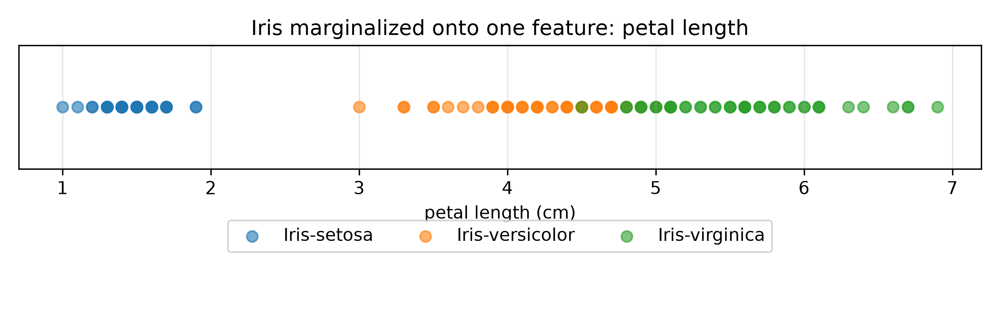
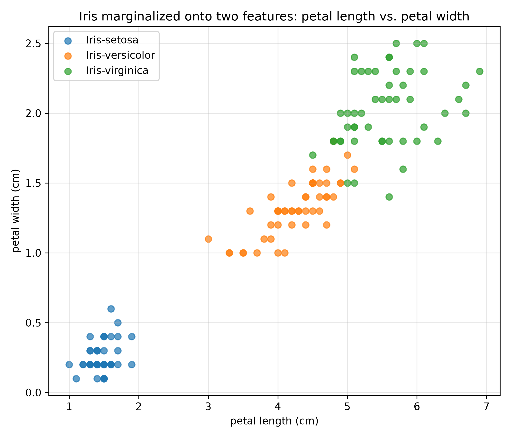
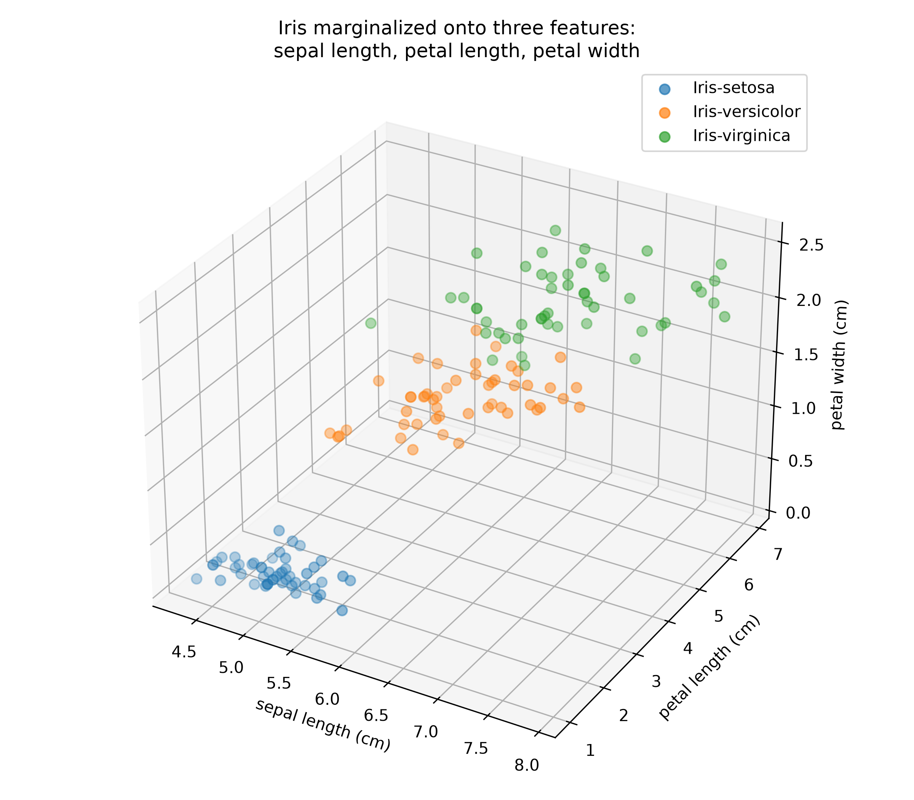
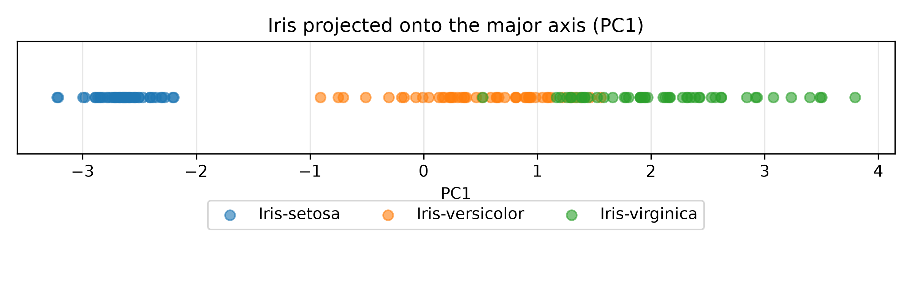
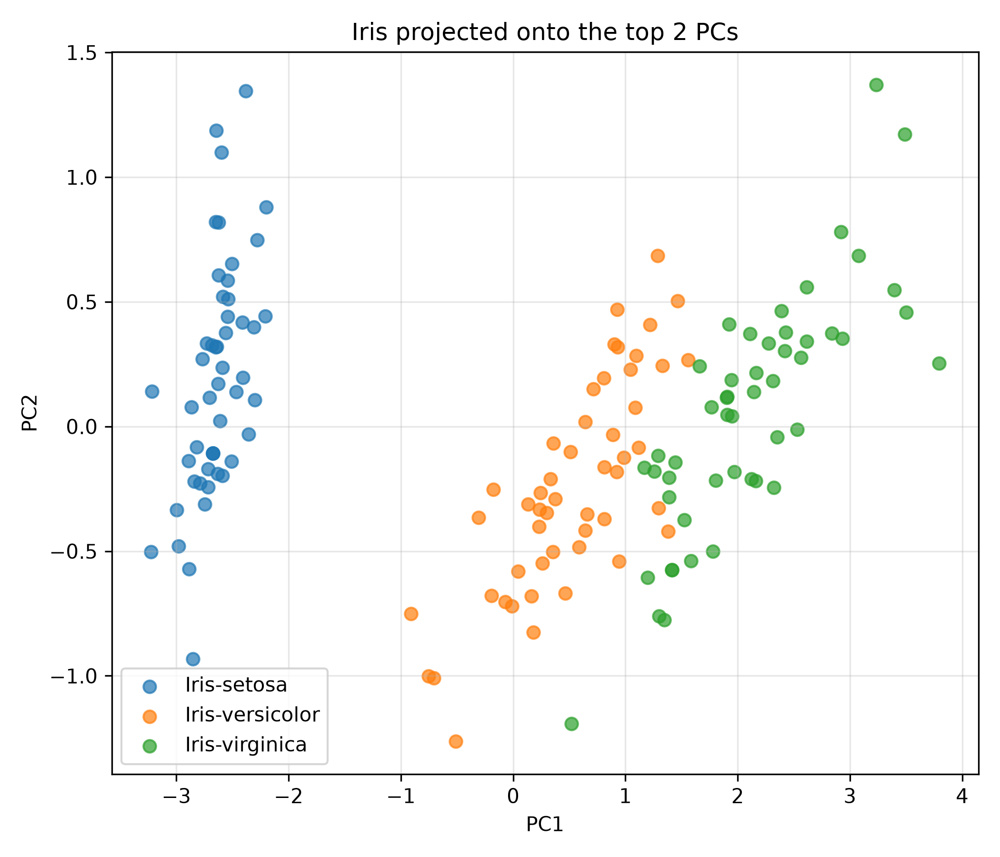
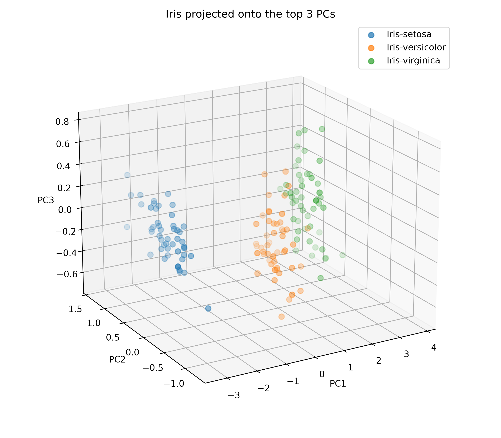
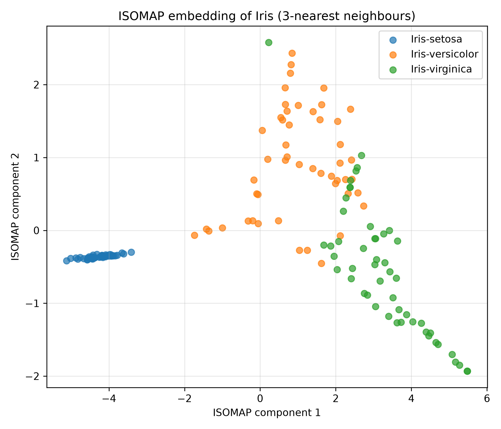

SYDE572 Assignment 3
This can be found at: https://e3kang.github.io.
AI Usage: I used AI to format this website, including setting the fonts, headings, positions and displays of plots, equations, and code for readability. AI was used to place calculated results onto the website.
Question 1: PCA by Hand
Consider the following dataset, containing 5 examples with 2 features each: (−2, −1), (−1, 0), (0, 1), (1, 2), (2, 3). Recall that with PCA we usually assume that the PCs are normalized ($\|w\| = 1$), we need to center the data before we apply PCA, and that the direction of the first PC is the one that minimizes the orthogonal distance to all data points.
Part 1: First Principal Component
What is the first principal component?
Step 1: Calculate the Mean Vector
$$m_x = \frac{1}{5}\left(\begin{bmatrix}-2\\-1\end{bmatrix} + \begin{bmatrix}-1\\0\end{bmatrix} + \begin{bmatrix}0\\1\end{bmatrix} + \begin{bmatrix}1\\2\end{bmatrix} + \begin{bmatrix}2\\3\end{bmatrix}\right) = \frac{1}{5}\begin{bmatrix}0\\5\end{bmatrix} = \begin{bmatrix}0\\1\end{bmatrix}$$Step 2: Covariance Matrix
$$E[xx^T] = \frac{1}{5}\left(\begin{bmatrix}-2\\-1\end{bmatrix}\begin{bmatrix}-2 & -1\end{bmatrix} + \begin{bmatrix}-1\\0\end{bmatrix}\begin{bmatrix}-1 & 0\end{bmatrix} + \begin{bmatrix}0\\1\end{bmatrix}\begin{bmatrix}0 & 1\end{bmatrix} + \begin{bmatrix}1\\2\end{bmatrix}\begin{bmatrix}1 & 2\end{bmatrix} + \begin{bmatrix}2\\3\end{bmatrix}\begin{bmatrix}2 & 3\end{bmatrix}\right)$$ $$= \frac{1}{5}\left(\begin{bmatrix}4 & 2\\2 & 1\end{bmatrix} + \begin{bmatrix}1 & 0\\0 & 0\end{bmatrix} + \begin{bmatrix}0 & 0\\0 & 1\end{bmatrix} + \begin{bmatrix}1 & 2\\2 & 4\end{bmatrix} + \begin{bmatrix}4 & 6\\6 & 9\end{bmatrix}\right) = \frac{1}{5}\begin{bmatrix}10 & 10\\10 & 15\end{bmatrix} = \begin{bmatrix}2 & 2\\2 & 3\end{bmatrix}$$ $$E[m_x m_x^T] = \begin{bmatrix}0\\1\end{bmatrix}\begin{bmatrix}0 & 1\end{bmatrix} = \begin{bmatrix}0 & 0\\0 & 1\end{bmatrix}$$ $$C_x = E[xx^T] - E[m_x m_x^T] = \begin{bmatrix}2 & 2\\2 & 2\end{bmatrix}$$Step 3: Find Eigenvalues
$$\det(C_x - \lambda I) = \begin{vmatrix}2-\lambda & 2\\2 & 2-\lambda\end{vmatrix} = (2-\lambda)^2 - 4 = 0$$ $$4 - 4\lambda + \lambda^2 - 4 = 0 \;\Rightarrow\; \lambda(\lambda - 4) = 0 \;\Rightarrow\; \lambda = 0,\ 4$$Step 4: Find Eigenvectors
We know $C_y = \text{diag}(4, 0)$, so $\text{Var}(y_1) = 4$. Investigate this:
$$\begin{bmatrix}2 & 2\\2 & 2\end{bmatrix}\begin{bmatrix}w_1\\w_2\end{bmatrix} = 4\begin{bmatrix}w_1\\w_2\end{bmatrix} \;\Rightarrow\; \begin{cases}2w_1 + 2w_2 = 4w_1\\ 2w_1 + 2w_2 = 4w_2\end{cases} \;\Rightarrow\; w_1 = w_2$$Normalize:
$$\begin{bmatrix}1\\1\end{bmatrix} \;\rightarrow\; \frac{1}{\sqrt{2}}\begin{bmatrix}1\\1\end{bmatrix}$$Answer
First principal component:
$$w_1 = \frac{1}{\sqrt{2}}\begin{bmatrix}1\\1\end{bmatrix}$$Part 2: Reconstruction Error of (3, 3)
What is the (L2-norm) reconstruction error of the point (3,3)? (Show your work.)
Step 1: Project to the Principal Component
Center the point:
$$x_c = \begin{bmatrix}3\\3\end{bmatrix} - \begin{bmatrix}0\\1\end{bmatrix} = \begin{bmatrix}3\\2\end{bmatrix}$$Projection:
$$y_1 = \begin{bmatrix}\frac{1}{\sqrt{2}} & \frac{1}{\sqrt{2}}\end{bmatrix}\begin{bmatrix}3\\2\end{bmatrix} = \frac{5}{\sqrt{2}}$$Step 2: Reconstruct $x$
$$\hat{x} = \begin{bmatrix}0\\1\end{bmatrix} + \frac{5}{\sqrt{2}}\begin{bmatrix}\frac{1}{\sqrt{2}}\\ \frac{1}{\sqrt{2}}\end{bmatrix} = \begin{bmatrix}0\\1\end{bmatrix} + \begin{bmatrix}5/2\\5/2\end{bmatrix} = \begin{bmatrix}5/2\\7/2\end{bmatrix}$$Step 3: Calculate Error
$$\|x - \hat{x}\|_2 = \left\|\begin{bmatrix}3\\3\end{bmatrix} - \begin{bmatrix}5/2\\7/2\end{bmatrix}\right\|_2 = \sqrt{\left(3 - \tfrac{5}{2}\right)^2 + \left(3 - \tfrac{7}{2}\right)^2} = \frac{1}{\sqrt{2}} \approx 0.7071$$Answer
Reconstruction error of (3, 3): $\dfrac{1}{\sqrt{2}} \approx 0.7071$
Part 3: Reconstruction Error of (3, 4)
What is the (L2-norm) reconstruction error of the point (3,4)? (Show your work.)
Step 1: Project to the Principal Component
$$x_c = \begin{bmatrix}3\\4\end{bmatrix} - \begin{bmatrix}0\\1\end{bmatrix} = \begin{bmatrix}3\\3\end{bmatrix}$$ $$y_1 = \begin{bmatrix}\frac{1}{\sqrt{2}} & \frac{1}{\sqrt{2}}\end{bmatrix}\begin{bmatrix}3\\3\end{bmatrix} = \frac{6}{\sqrt{2}}$$Step 2: Reconstruct $x$
$$\hat{x} = \begin{bmatrix}0\\1\end{bmatrix} + \frac{6}{\sqrt{2}}\begin{bmatrix}\frac{1}{\sqrt{2}}\\ \frac{1}{\sqrt{2}}\end{bmatrix} = \begin{bmatrix}0\\1\end{bmatrix} + \begin{bmatrix}3\\3\end{bmatrix} = \begin{bmatrix}3\\4\end{bmatrix}$$Step 3: Calculate Error
$$\|x - \hat{x}\|_2 = \left\|\begin{bmatrix}3\\4\end{bmatrix} - \begin{bmatrix}3\\4\end{bmatrix}\right\|_2 = 0$$Answer
Reconstruction error of (3, 4): $0$
The point (3, 4) lies exactly on the line through the mean in the direction of the first PC ($x_2 = x_1 + 1$), so it is reconstructed perfectly.
Question 2: Data Visualization
Load the Iris dataset. Marginalize (project data onto the axis or remove the other feature dimensions) and visualize the dataset for any one feature, a combination of 2 features or a combination of 3 features. Show your results, it is arbitrary what axes you choose. Do any of these marginalizations highlight the classification of the dataset into nice clusters, if so, which ones. Comment.
One Feature: Petal Length

Two Features: Petal Length vs. Petal Width

Three Features: Sepal Length, Petal Length, Petal Width

Comments
For one feature, the petal length separated the three types effectively, completly isolating setosa while versicolor and virginica only have minor overlap. (I also tried other features: Petal width has a similar separation, but less range of data, so the components aren't as far apart. Sepal length and width are significantly worse for separation in 1D, having tons of overlap.)
For two features, I chose (petal length, petal width). This produces nice clusters for all three flower types, with setosa completely isolated on the bottom left and the other two showing slight overlap.
For three features, I chose (sepal length, petal length, petal width), which once again creates nice clusters, with setosa isolated and the other two having overlap slightly more than the two-dimensional one.
Question 3: PCA
Load the Iris dataset. Perform PCA on this dataset, you can use scikit-learn python functions. Visualize the results marginalized on the major axis, the top 2 axes, the top 3 axes. Provide the vectors that describe the PCA axes.
PCA Axis Vectors
Each vector is a unit vector in the original feature space, with components ordered as (sepal length, sepal width, petal length, petal width):
$$w_1 = \text{PC1} = \begin{bmatrix} 0.3616 \\ -0.0823 \\ 0.8566 \\ 0.3588 \end{bmatrix}, \quad w_2 = \text{PC2} = \begin{bmatrix} 0.6565 \\ 0.7297 \\ -0.1758 \\ -0.0747 \end{bmatrix}, \quad w_3 = \text{PC3} = \begin{bmatrix} -0.5810 \\ 0.5964 \\ 0.0725 \\ 0.5491 \end{bmatrix}, \quad w_4 = \text{PC4} = \begin{bmatrix} 0.3173 \\ -0.3241 \\ -0.4797 \\ 0.7511 \end{bmatrix}$$Major Axis (PC1)

Top 2 Axes (PC1, PC2)

Top 3 Axes (PC1, PC2, PC3)

Question 4: Data Compression
It is important to know how much of the information in our dataset is captured by the low-dimensional PCA representation. In class we discussed the "analysis" view that PCA maximizes the variance that is explained by the PCs, and the connection between the Frobenius norm and the variance of a centered data matrix X. Use this connection to answer the following.
Part 1: Variance Explained by Two PCs
How much of the variance is explained by our two-dimensional representation from the previous question?
Answer
97.76% (rounded) of the variance is explained by the 2D representation. (92.46% by PC1, 5.30% by PC2)
Part 2: PCs Required for 50% of the Variance
How many PCs are required to explain 50% of the variance in the data?
Answer
Only 1, the first PC, is needed. The first component explains 92% of the variance.
Question 5: Non-linear Components
Euclidean distances between very different plants are unlikely to be particularly meaningful. However, since related plants tend to share similar traits we might expect the plants to live on a low-dimensional manifold. This suggests that ISOMAP may give a better visualization. Use the python scikit-learn Isomap function which computes the approximate geodesic distance (shortest path through a graph where the edges are only between nodes that are k-nearest neighbours) between each pair of points, and then fits a standard MDS (MultiDimensional Scaling) model using gradient descent. Hand in your code and the plot of the result when using the 3-nearest neighbours. Compare the dimensionality reduction using the non-linear function and PCA, which is preferable and why? Evaluate against data compression criteria or the ability to classify the data.
Comparison: PCA (PC1, PC2) vs. ISOMAP (3-NN)
The left plot is the projection of data onto PC1, PC2 (same as in Q3), the right plot is the non-linear ISOMAP embedding.

Comments:
Qualitatively analyzing the separation: The PCA graph has clearer separation of the three types of flowers. If we drew lines to separate, we could separate the versicolor (orange) and virginica (green) almost completely. If we used a curved line, we could separate them completely.
For the ISOMAP graph, no line can cleanly separate versicolor and virginica. There is some overlap.
So, the 2 PCs graph is preferable since it classifies the data better.
← Back to portfolio